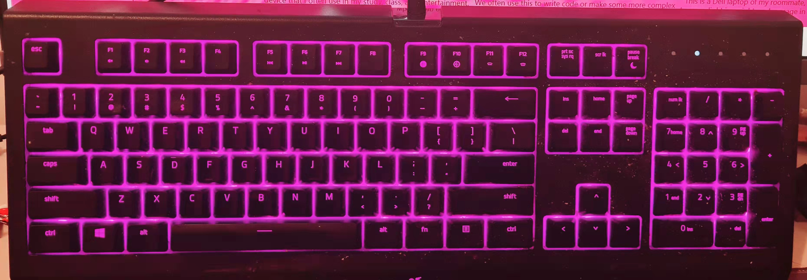
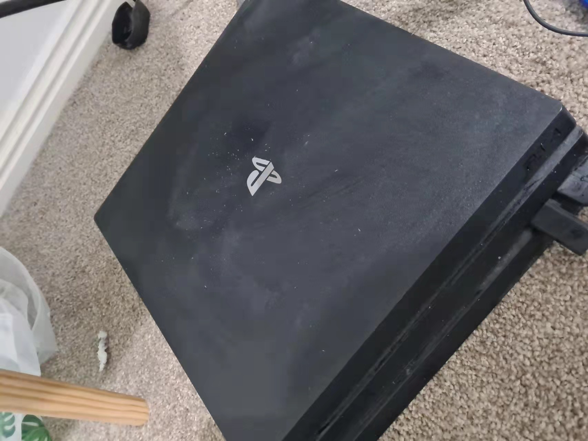
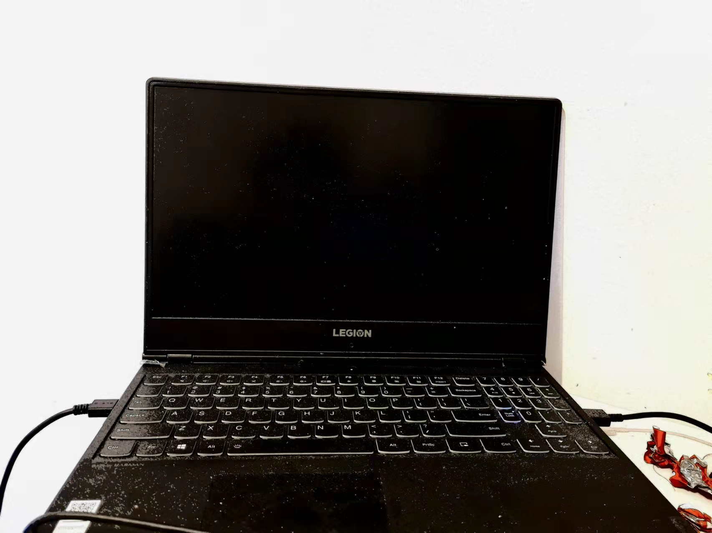
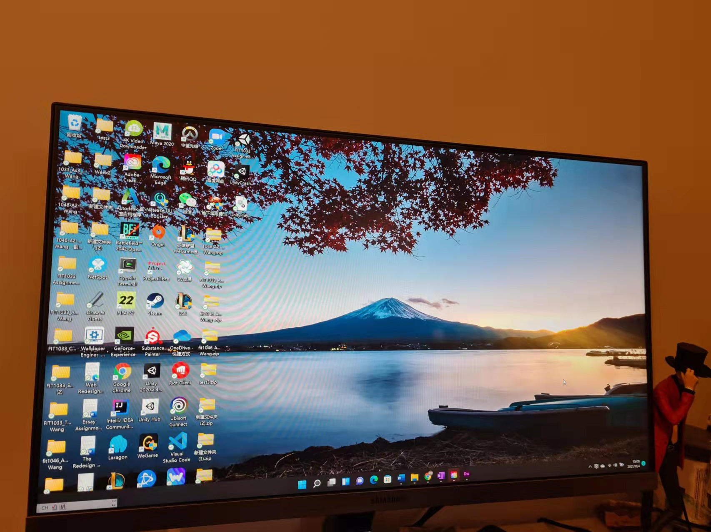
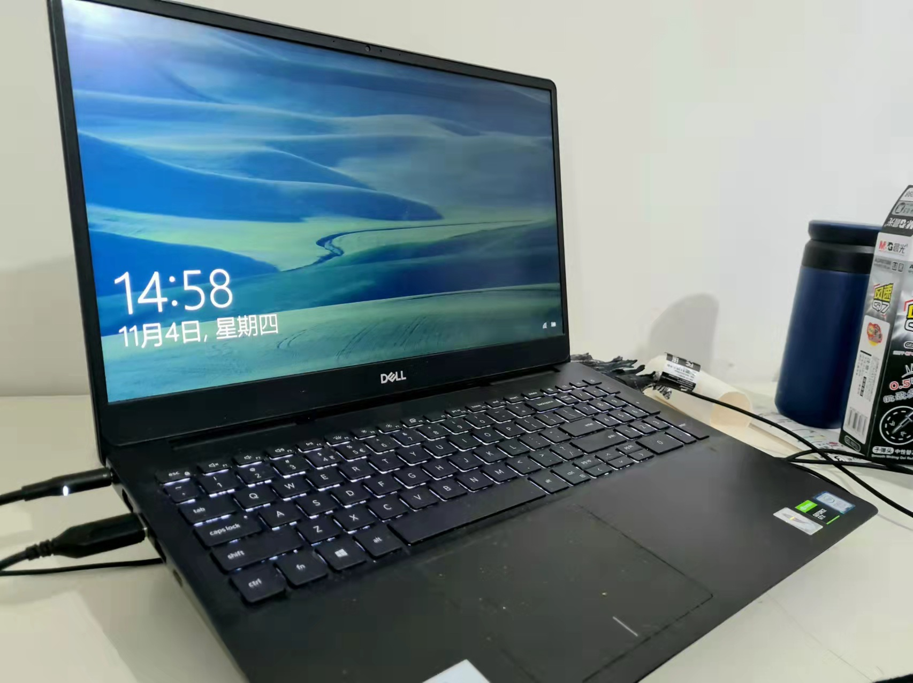

On this webpage, we plan to use several pictures and brief introductions to introduce common electronic devices
that can be connected to the Internet in ordinary people's homes.
Although there are not many high-tech products, you can use this web page to understand the needs
and use of ordinary young people for the Internet and electronic products.
|  As you can see, this keyboard is also a smart device that can connect to the Internet. It can sense nearby WiFi and try to connect. As for the bright color of the keyboard, it has nothing to do with the network, but is randomly determined by the keyboard itself. | See more | Contract | Forum |
| 
This is my roommate’s PlayStation4. You can watch movies or play games through the monitor, which is inseparable from the wireless network. |

This is my own laptop, Lenovo Legion, which is an electronic device that I often use in my study, class, and entertainment. |
 This is a desktop computer at home with a 24-inch monitor. We often use this to write code or make some more complex programs. |
 This is a Dell laptop of my roommate, which is easy to carry, light in weight, and average in performance. |
Welcome to know more |